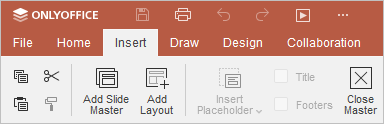

Slide Master
Slide Master vam omogućava da istovremeno uređujete raspored za sve slajdove, npr. ujednačite fontove ili vodene žigove.
Da biste ušli u Slide Master režim:
- Idite na karticu View.
- Kliknite na dugme Slide Master na gornjoj traci sa alatkama.
Upravljanje master slajdovima:
- Kliknite na dugme Add Slide Master na gornjoj traci sa alatkama kartice View.
- Master slajdovi za svaki raspored pojaviće se u listi slajdova sa leve strane. Oni su vidljivi samo vama i samo u Slide Master režimu.
-
Uredite slajdove onako kako želite da izgledaju koristeći kartice Home i Insert.

- Ako vam je potrebno više rasporeda, kliknite na dugme Add Layout.
- Prilagodite raspored slajda. Kliknite na dugme Insert Placeholder da biste dodali i uredili posebne oblasti sadržaja.
- Uklonite oznaku sa dugmadi Title i Footers na gornjoj traci sa alatkama ako vam nisu potrebni.
-
Da biste preimenovali master slajd, pređite mišem preko njega u levom panelu, kliknite desnim tasterom miša i izaberite opciju Rename Master.
Da biste preimenovali raspored, pređite mišem preko njega u levom panelu, kliknite desnim tasterom miša i izaberite opciju Rename Layout.
Unesite željeni naziv u odgovarajuće polje i kliknite na OK.
Da biste izašli iz Slide Master režima, kliknite na dugme Close Master na gornjoj traci sa alatkama ili idite na karticu View i kliknite na dugme Normal.